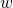
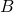
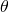

I was reviewing an electronics textbook the other day, and it made an offhand comment that "sinusoidal signals of the same frequency always add up to a sinusoid, even if their magnitudes and phases are different". This gave me pause; is that really so? Even with different phases?
Using EE notation, a sinusoidal signal with magnitude , frequency  and phase is [1]. The book's statement amounts to:
The sum is also a sinusoid with the same frequency, but potentially different magnitude and phase. I couldn't find this equality in any of my reference books, so why is it true?
Empirical probing
Let's start by asking whether this is true at all? It's not at all obvious that this should work. Armed with Python, Numpy and matplotlib, I plotted two sinusoidal signals with the same frequency but different magnitudes and phases:
Now, plotting their sum in green on the same chart:
Well, look at that. It seems to be working. I guess it's time to prove it.
Proof using trig identities
The first proof I want to demonstrate doesn't use any fancy math beyond some basic trigonometric identities. One of best known ones is:
Taking our sum of sinusoids:
Applying (id.1) to each of the terms, and then regrouping, we get:
Now, a change of variables trick: we'll assume we can solve the following set of equations for some  and  [2]:
To find , we can square each of (1) and (2) and then add the squares together:
Using the fact that , we get:
To solve for , we can divide equation (2) by (1), getting:
Meaning that:
Now that we have the values of and , let's put them aside for a bit and get back to the final line of our sum of sinusoids equation:
On the right-hand side, we can apply equations (1) and (2) to get:
Applying (id.1) again, we get:
We've just shown that the sum of sinusoids with the same frequency is another sinusoid with frequency , and we've calculated and from the other parameters (, , and )
Proof using complex numbers
The second proof uses a bit more advanced math, but overall feels more elegant to me. The plan is to use Euler's equation and prove a more general statement on the complex plane.
Instead of looking at the sum of real sinusoids, we'll first look at the sum of two complex exponential functions:
Reminder: Euler's equation for a complex exponential is
Regrouping our sum of exponentials a bit and then applying this equation:
The value inside the square brackets can be viewed as a complex number in its rectangular form: . We can convert it to its polar form: , by calculating:
In our case:
And:
Therefore, the sum of complex exponentials is another complex exponential with the same frequency, but a different magnitude and phase:
From here, we can use Euler's equation again to see the equivalence in terms of sinusoidal functions:
If we only compare the imaginary parts of this equation, we get:
With known and we've calculated earlier from the other constants
Note that by comparing the real parts of the equation, we can trivially prove a similar statement about the sum of cosines (which should surprise no one, since a cosine is just a phase-shifted sine).
| [1] | Electrical engineers prefer their signal frequencies in units of radian per second. We also like calling the imaginary unit j instead of i, because the latter is used for electrical current. |
| [2] | If you're wondering "hold on, why would this work?", recall that any point (x,y) on the Cartesian plane can be represented using polar coordinates with magnitude and angle . |